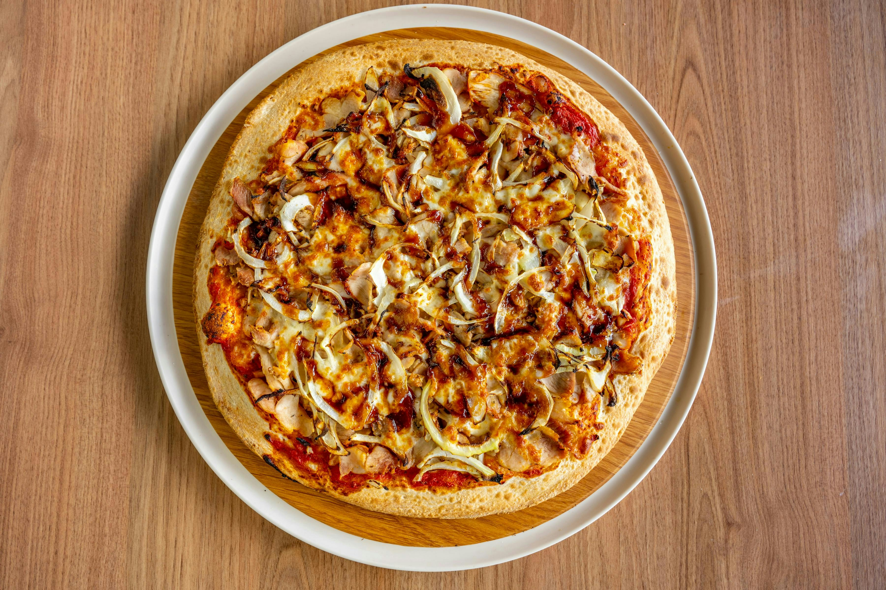

Barbeque Chicken Pizza

Description
BBQ Chicken Pizza features a crispy crust topped with smoky barbecue sauce,
tender grilled chicken, and melted Colby-Jack cheese. It delivers the perfect
balance of sweet, smoky, and savory in every bite.
Ingredients
- 1 (12 inch) pre-baked pizza crust
- 1 cup spicy barbeque sauce
- 2 skinless boneless chicken breast halves, cooked and cubed
- 1 cup sliced pepperoncini peppers
- 1 cup chopped red onion
- 1/2 cup chopped fresh cilantro
- 2 cups shredded Colby-Jack cheese
Steps
- Gather all ingredients. Preheat the oven to 350 degrees F
(175 degrees C).
- Place pizza crust on a baking sheet. Spread barbeque sauce on crust.
- Top with chicken, pepperoncini peppers, onion, and cilantro.
- Cover with Colby-Jack cheese.
- Bake in the preheated oven until cheese is melted and bubbly, about 15
minutes.